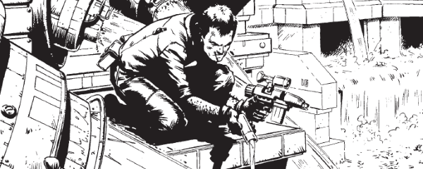

The East-Meg agent who brought Mega-City One to its knees by infecting it with Block Mania, then later managed to escape his encubement to threaten revenge for the destruction of East-Meg One.
Art by Steve Dillon
| Story Title | Parts | Pages | w indicates a wraparound coverCovers | Year(s) | Issues | Writer | Artist | Colourist | Letterer |
|---|---|---|---|---|---|---|---|---|---|
From Judge DreddBlock Mania | 9 | 55 | 236 [w]: Brian Bolland 240: Brian Bolland 242: Brian Bolland 2,1w | 1981 | 236-244 | Alan Grant John Wagnervarious | Mike McMahon: 1‑2 Ron Smith: 3‑6 Steve Dillon: 7‑8 Brian Bolland: 9 various | <-- 14pp, [b&w] | Tom Frame: 1‑7 Steve Potter: 8‑9 various |
From Anderson Psi Division[Hour of the Wolf] | 12 | 62 | 521: Barry Kitson 529: Barry Kitson 2 | 1987 | 520-531 | Alan Grant John Wagnervarious | Barry Kitson: 1‑10 Anderson: 6‑7 Will Simpson: 11‑12 Bruno: 11‑12 various | [b&w] | Steve Potter: 1‑6 Tom Frame: 7‑8, 10, 12 John Aldrich: 9, 11 various |
From Anderson Psi DivisionTriad | 10 | 50 | 643: Mick Austin 1 | 1989 | 635-644 | Alan Grant | Arthur Ranson | [b&w] | Steve Potter |
From Anderson Psi DivisionChildhood's End | 8 | 63 | M2.28: Kevin Walker M2.32: Mark Wilkinson M2.34: Kevin Walker 3 | 1993 | M2.27-M2.34 | Alan Grant | Kevin Walker | <-- | Steve Potter |
From Anderson Psi DivisionPostcards From the Edge | 11 | 86 | 2.51: Steve Sampson 2.59: Tony Luke 2 | 1994 | M2.50-M2.60 | Alan Grant | Steve Sampson 1, 10‑11 Tony Luke 2, 8 Charles Gillespie 3, 9 Arthur Ranson 4 Xuasus 5‑7 various | <-- | Annie Parkhouse: 1‑3, 5‑11 Elitta Fell: 4 various |
From Judge Dredd Doomsday arc: prog/meg crossover.Return of the Assassin | 7 | 42 | 1141: Greg Staples 1142: Duncan Fegredo 1145: Jason Brashill 3 | 1999 | 1141-1147 | John Wagner | Cam Kennedy | D'Israeli | Tom Frame |
From Judge Dredd Doomsday arc: prog/meg crossover.The Trial | 3 | 32 | 1148: Duncan Fegredo 1150: Mark Harrison 2 | 1999 | 1148-1150 | John Wagner | Simon Davis | Charlie Adlard | Tom Frame |
From Judge Dredd Doomsday arc: prog/meg crossover.Trial of Strength | 2 | 12 | 1151: Greg Staples 1 | 1999 | 1151-1152 | John Wagner | Neil Googe Stephen Baskerville (inks, 2)various | Trevor Hairsine | Tom Frame |
From Judge DreddSin City | 11 | 78 | 1289: Kevin Walker 1296: Jim Murray 1299: Kevin Walker 3 | 2002 | 1289-1299 | John Wagner | Kevin Walker | <-- | Tom Frame |
From Judge DreddThe Trial of Orlok | 2 | 13 | 1336: Brian Bolland 1 | 2003 | 1336-1337 | John Wagner | Cam Kennedy | Chris Blythe | Tom Frame |
From Judge DreddJumped | 4 | 25 | 1494: Nick Percival 1 | 2006 | 1491-1494 | John Smith | Simon Fraser | Gary Caldwell | Annie Parkhouse |
| year | episodes | pages |
| 1979 | 0 | 0 |
| 1980 | 0 | 0 |
| 1981 | 9 | 55 |
| 1982 | 0 | 0 |
| 1983 | 0 | 0 |
| 1984 | 0 | 0 |
| 1985 | 0 | 0 |
| 1986 | 0 | 0 |
| 1987 | 12 | 62 |
| 1988 | 0 | 0 |
| 1989 | 10 | 50 |
| 1990 | 0 | 0 |
| 1991 | 0 | 0 |
| 1992 | 0 | 0 |
| 1993 | 8 | 63 |
| 1994 | 11 | 86 |
| 1995 | 0 | 0 |
| 1996 | 0 | 0 |
| 1997 | 0 | 0 |
| 1998 | 0 | 0 |
| 1999 | 12 | 86 |
| 2000 | 0 | 0 |
| 2001 | 0 | 0 |
| 2002 | 11 | 78 |
| 2003 | 2 | 13 |
| 2004 | 0 | 0 |
| 2005 | 0 | 0 |
| 2006 | 4 | 25 |
| 2007 | 0 | 0 |
| 2008 | 0 | 0 |